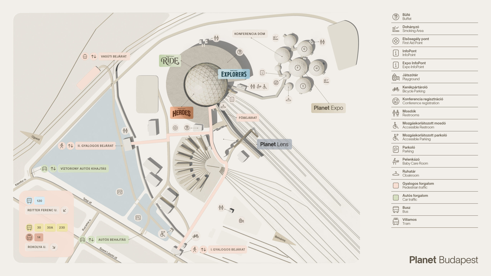

Főoldal
Itt minden fontos tudnivalót összegyűjtöttünk a nyitvatartástól és a
helyszínektől kezdve
egészen az apró részletekig. Segítünk, hogy a programod tartalmas,
gördülékeny és
élményteli legyen — akár családdal, barátokkal vagy iskolai csoporttal
érkezel.
Fedezd fel, mi minden vár rád a Planet különleges világában!

2026. február 25. és március 29. között (hétfőtől vasárnapig minden nap)
várjuk a látogatókat 9:00 és 18:00 között.
A különböző élményterek nyitvatartása:
Planet Explorers – 2026. 02. 25. – 03. 29., minden nap.
Planet Ride – 2026. 02. 25. – 03. 29., minden nap.
Planet Heroes – 2026. 02. 25. – 03. 29., minden nap.
Planet Lens – 2026. 02. 25. – 03. 29., minden nap.
Planet Expo – 2026. 02. 25. – 03. 01., öt napon át.
A rendezvény helyszíne a Magyar Vasúttörténeti Park, amely hatalmas
átalakuláson ment keresztül, egy különleges
élményváros épült fel a park
területén.
cím: 1142 Budapest, Tatai út 95.